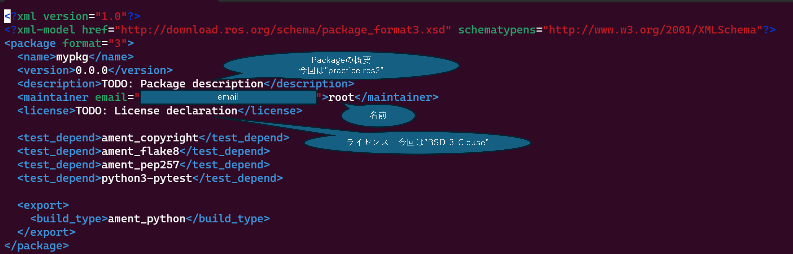

dockerの環境構築が終わっていない人は環境構築編を見てdockerの環境構築を済ませてください
また、ros2_wsをgitに登録しておきましょう
githubで空のレポジトリを作成し以下のコマンドでリモートレポジトリとローカルレポジトリを紐づけしましょう
cd ~/ros2_ws
git init
git remote add origin "repositoryのurl"
git add .
git commit -m "first commit"
git push --set-upstream origin main
dockerを起動するとros2_wsといわれるディレクトリがあると思います
そのディレクトリ内のsrcディレクトリ内で次のコマンドを実行することでpythonのmypkgという名前のpackageを作成できます
cd /src
ros2 pkg create mypkg --build-type ament_python
ros2はpackageを公開することを想定しているためライセンスや署名をしていないと警告が出ます
そのためros2のpackageを作成したらそれらを記述しておきましょう
記述するのはpackage.xmlとsetup.pyになります
今回はvimによる編集を想定しています
cd mypkg
vi package.xml

vi setup.py
今回はros2のデモとして作成することが多いtalkerとlistenerを作成します
talkerは単純に数字を増やしていきそれをtopicに配信するだけのコードとなります
なので作るものとしては単純なpublisherです
cd mypkg
touch talker.py
vi talker.py
まずtalkerで使ったモジュールをpackageに登録しましょう
cd ../
vi package.xml
ros2に今書いたtalker.pyを登録しましょう
vi setup.py
rosのpackageに依存するパッケージのインストールを行います
以下のコマンドを実行することで依存パッケージのインストールができます
rosdep install -i --from-paths ~/ros2_ws/src
#All required rosdeps installed successfully
と出れば成功です
cd ~/ros2_ws
colcon build
source ~/.bashrc
次のコマンドでtalkerを実行することができます
ros2 run mypkg talker

このように出力されていれば成功です
listenerはtalkerの配信したメッセージを受け取り出力するだけのコードです
なので作るものとしては単純なsubscriberです
cd src/mypkg/mypkg
touch listener.py
vi listener.py
talkerと使ったモジュールは同じなのでpackage.xmlに追記することはないが
setup.pyにlistenerの登録を行う必要がある
cd ../
vi setup.py
cd ~/ros2_ws
colcon build
source ~/.bashrc
二つの端末を立ち上げtalkerとlistenerでmsgの受け渡しができていることを確認しましょう
端末１
ros2 run mypkg talker
端末２
ros2 run mypkg listener
下のようになっていればうまくいっています
(gifファイルの関係上スロー再生のようになっています)

これができていればros2開発のスタートラインに立つことができています